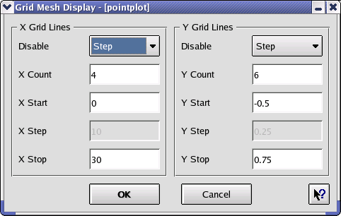

Engauge Digitizer - Grid Display Dialog
Engauge Digitizer - Grid Display Dialog
Engauge Digitizer - Grid Display Dialog
Engauge Digitizer - Grid Display DialogThe Grid Display dialog lets you control the placement of grid lines that will be superimposed on the original image.
Hint: Grid lines are often useful for visually checking that the axes points are correctly placed and set.
The Count, Start, Step and Stop values determine where the horizontal and vertical grid lines appear. Only three of the four values can be changed at a time, and the fourth value is updated correspondingly using the relationship START + COUNT * STEP = STOP. The dropdown comboboxes determine which one of the values is not available for manual editing.
The grid display settings for the pointplot.bmp example are shown below:
